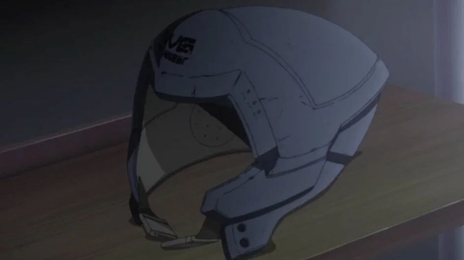
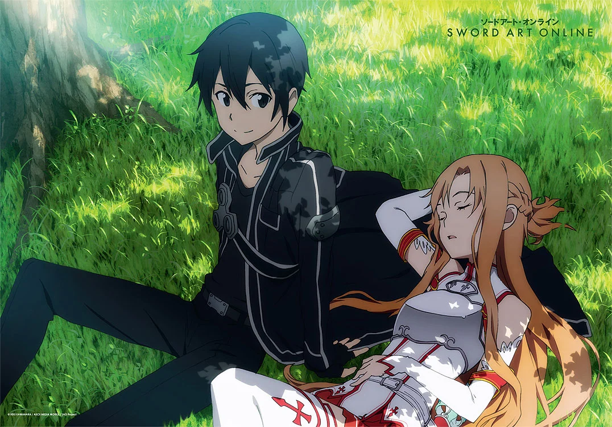
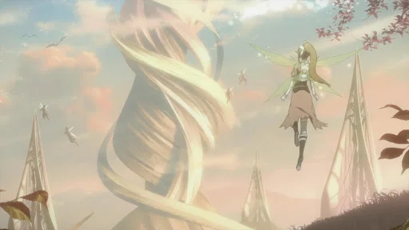

Le point sur Sword Art Online
SAO c'est quoi ?
Sword art online est à l’origine un light novel écrit par Reki Kawahara. Il est ensuite adapté en mangas et anime. Cette licence a connu un grand succès. Elle a notamment été le sujet de plusieurs jeux vidéo. Un film a également vu le jour (SAO ordinal scale) qui est passé dans nos cinémas.
Le synopsis
Le héros principale (Kazuto Kirigaya/Kirito) est un gamer. Il a tendance à être attiré par les écrans ce qui empêche d’avoir beaucoup d’amis. Un nouveau jeu sort avec la technologie « nerve gear ». une sorte de casque de VR
Kirito a participé à la béta du jeu SAO. Il va donc se connecter au jeu dès le lancement. Une fois quelques monstres tués les joueurs apprennent qu’ils ne peuvent pas se déconnecter. Ils sont obligés de terminer le jeu composé de 100 étages. Malgré la tâche insurmontable kirito garde la tête froide, il compte terminer ce jeu de la mort.
Les rencontre de Kirito
Durant son aventure il va faire la rencontre de nouveaux amis. Il tisse des liens avec Asuna et devient son petit ami. Les deux recueillent yui une intelligence artificielle avec l’apparence d’une petite fille. Pendant 2 ans kirito vie une vie de danger constant. Il combat des monstres et des boss toujours plus fort. Sa vie est constamment mise à épreuve. Il arrive tout de même à trouver des moments de calme et de tendresse.
La fin du jeu de la mort
Une fois le jeu terminé seulement 6 147 joueurs peuvent revenir au monde réel. Environ 4 000 joueurs sont morts à cause du jeu. Mais la vie en société des survivants est également quasiment morte. Les étudiants ont perdu 2 ans, les adultes perdus leurs travails. Pendant 2 ans ils n’ont pas bougé un muscle d’eux-mêmes. Ils doivent donc tous rééduquer leurs corps et leurs esprits. Tous les survivants ont gardé une part d’eux coincé dans le jeu. Ce qui est normal vu qu’il y a passé 2 ans. Pour notre héro l’histoire n’en est pas à son terme. Asuna, elle, ne s’est toujours pas réveillée. Elle reste coincée dans le jeu. Il repart donc dans le monde de ALO pour essayer de la libérer. Mais cette fois la mort in game ne l’est pas IRL.
Une nouvelle ère pour le jeu vidéo
À la toute fin kirito et ses amis vont dans une académie. Celle-ci est spécialisée pour les survivants du jeu. Il met en ligne « the seed », des package et programmes créés pour SAO. Cela permet à tous les développeurs de créer des jeux avec le programme permettant le fulldive. Evidement la défaillance pouvant entrainer la mort est supprimée. Grâce à « the seed » ils recréent le monde dans lequel ils ont vécu.
Ouvrir la galerie